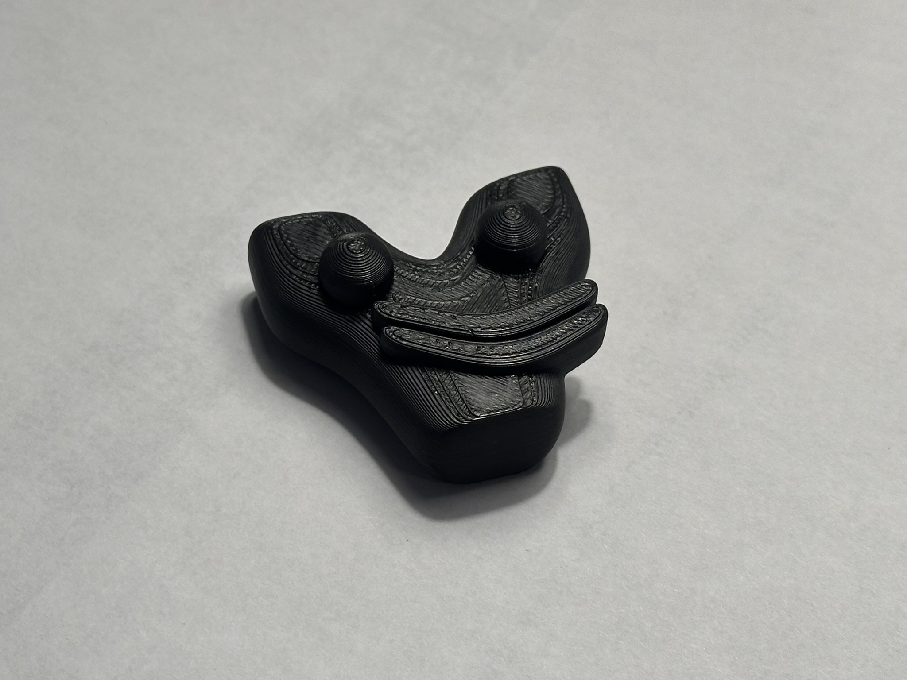
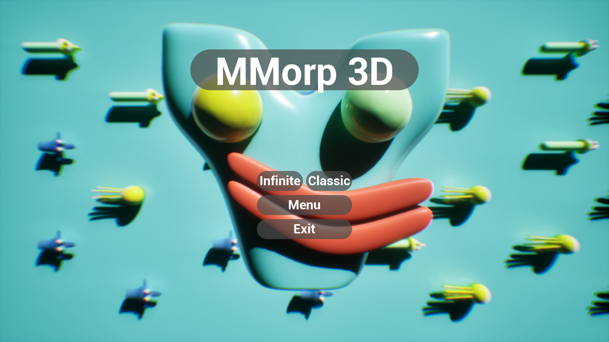
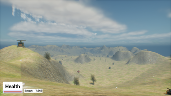

Game development
Worlds made
for fun.
I started making games in Scratch and later moved to Unreal Engine 5. Along the way, I’ve built terrain generation, vehicle systems, building mechanics, and air-to-air combat.
I make my models in Blender. The games have been a reason to keep learning, and something to share with friends.

From Blender to the printer
The models are
part of the project.
Making the assets myself is a big part of the fun. For MMORP 3D, I worked in Unreal Engine 5 without using any outside assets.
My games on itch.io ↗In-game
A few views from my games.




Development timeline / 2020–2024
MMORP 3D (October 2024)
Latest iteration of the MMORP series, this time in Unreal Engine 5 without the use of any outside assets of any kind.
View on itch.ioKafkaesque Game (April 2024)
My first slightly overambitious major project in Unreal Engine 5, featuring randomly generated terrain, land & air vehicles, and an advanced building system.
View on itch.ioMMORP 3 (Gameplay Test) (May 2022)
A significant step forward compared to MMORP, this was a major step in refining movement and ui.
Play (on-site)MMORP (December 2021)
The original MMORP project, built on Scratch. This game laid the groundwork for the series.
View on ScratchThis timeline includes selected projects with playable or published versions.